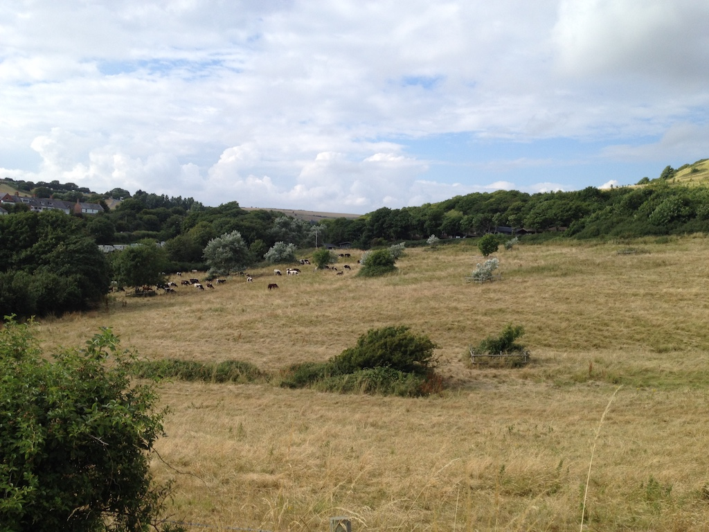
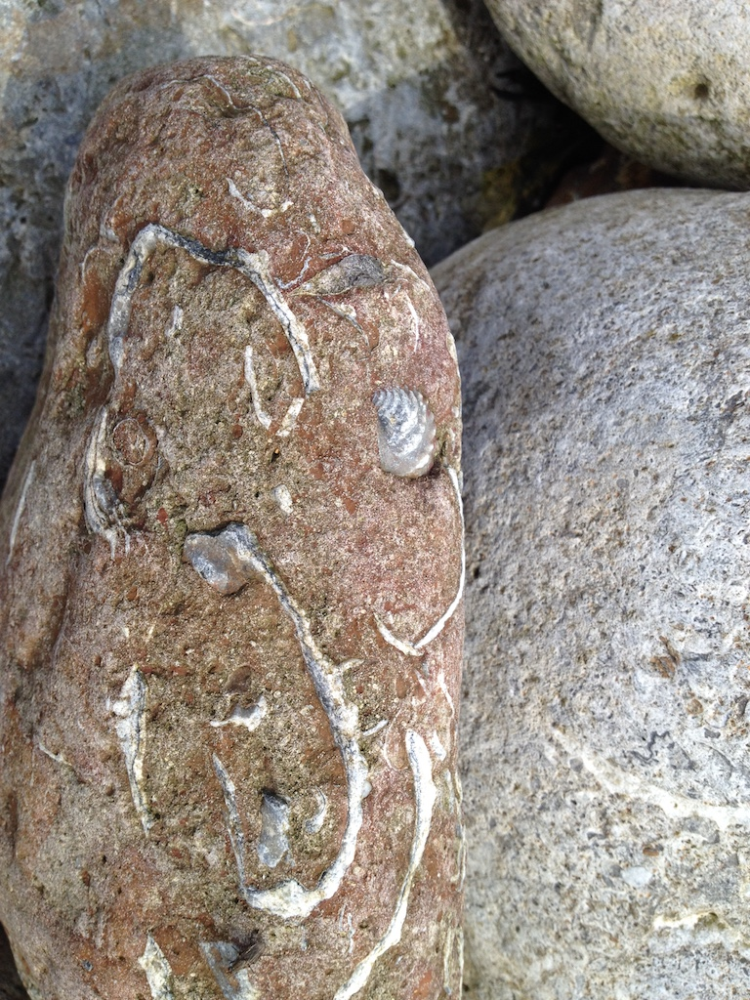
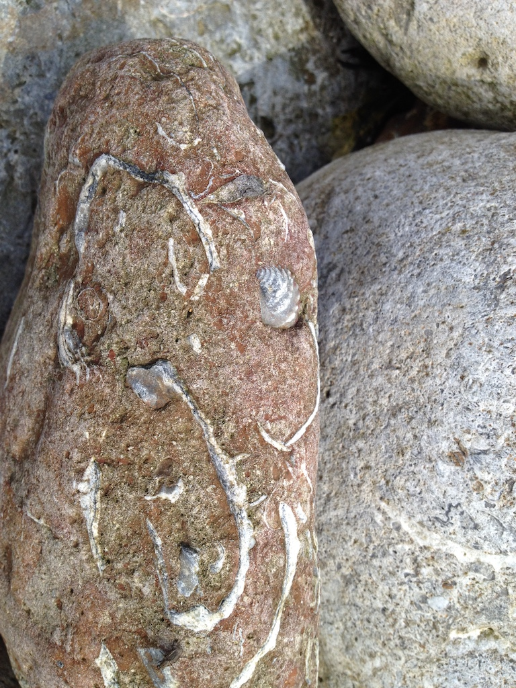

On Monday 16th July we were away by 9:30, heading for Dorset. First stop was Hinton Ampner (NT) for coffee and a look around the house. We then moved on to Mottisfont (NT) for lunch, but we didn't have time to look in the house. Then we headed for Ossmington Mills, between Weymouth and Lulworth Cove, arriving at the holiday park at around a quarter to four. Paul, Krista and Rowan had arrive a little earlier. So we started with a little exploration of the 'fossil' beach, before having a pasta supper.
The lodge was modern, well appointed and quite spacious. We discovered that it was actually for sale.
Tuesday was another fine day. We walked along the coastal path to Rinsted Bay (about a mile) where we found a cafe for coffee. The return walk was through woodland and fields. After lunch we tried out the pool, which was very good, before exploring the 'rock pool' beach and finally eating in the Smugglers Inn.
On Wednesday we had a sunny day out in Weymouth, which was a short drive westward. Weymouth has a long sandy beach, so after walking around the town (and buying a bucket and spade) we had a pleasant lunch in a restuarant by the old harbour and then spent the rest of the time sitting on the beach.
The next day was also a hot and mainly sunny day. We decided to spend the day locally, so we went fossil hunting, twice, but with little success. We swam in the pool and ate in (or rather outside) the Smugglers Inn again.
 

Friday 20th was a long, busy, hot and tiring day. We drove to Lulworth Cove, but started by walking half a mile uphill (very steep) and half a mile downhill to Durdle Door. We didn't walk down to the beach, but an ice lolly refreshed us before we made the return journey. The half mile uphill was not quite so steep.
We had a pizza lunch in Lulworth Cove before going down to the beach. When we got back to the cabin we went for a swim, had tea and went fossil hunting again.